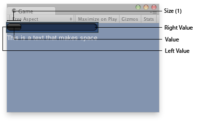

| value | 最小值和最大值之间的位置。 |
| size | 我们能看到多少内容？ |
| leftValue | 滚动条左端的值。 |
| rightValue | 滚动条右端的值。 |
| style | 用于滚动条背景的样式。如果省略，则使用当前 GUISkin 的 horizontalScrollbar 样式。 |
| options | （可选）一个布局选项列表，用于指定额外的布局属性。此处传递的任何值都将覆盖 style 定义的设置。 |
float 修改后的值。用户可以通过拖动滚动条或单击末端的箭头来更改该值。
创建一个水平滚动条。
滚动条控件返回一个浮点值，表示可拖动的滑块在滚动条中的位置。您可以使用该值调整另一个 GUI 元素以反映滚动位置。但是，使用“滚动视图”控件可以更轻松地处理大多数可滚动视图。
\
游戏视图中的水平滚动条。
using UnityEngine;
public class ExampleScript : MonoBehaviour { float hSbarValue;
void OnGUI() { hSbarValue = GUILayout.HorizontalScrollbar(hSbarValue, 1.0f, 0.0f, 10.0f); GUILayout.Label("This is a text that makes space"); } }
系统按以下方式在当前皮肤中搜寻滚动条的样式：1) 对于滚动条末端的按钮，向样式名称添加“leftbutton”和“rightbutton”； 2) 对于滚动条滑块（鼠标拖动的条），向样式名称添加“thumb”。
using UnityEngine; using System.Collections;
public class ExampleClass : MonoBehaviour { public float scrollPos = 0.5F; // This will use the following style names to determine the size / placement of the buttons // MyScrollbarleftbutton - Name of style used for the left button. // MyScrollbarrightbutton - Name of style used for the right button. // MyScrollbarthumb - Name of style used for the draggable thumb. void OnGUI() { scrollPos = GUILayout.HorizontalScrollbar(scrollPos, 1, 0, 100, "MyScrollbar"); } }